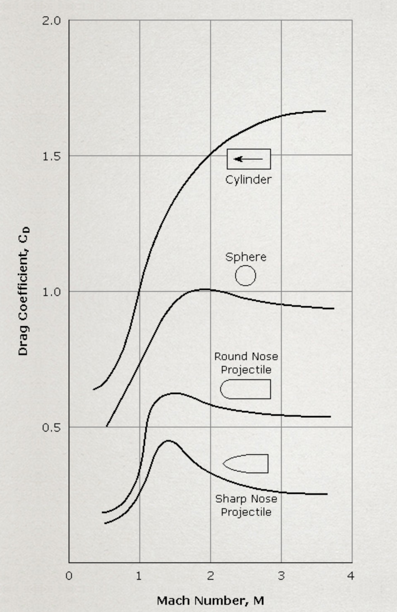
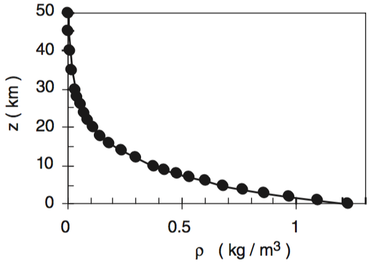

Physics Engine

The vector representation shown in Figure 1 serves as the basis for the forces acting on the vehicle body. To fully determine the outcome of a force acting on the body, both linear acceleration and moments must be calculated. In Euclidean space, the simulation can be interpreted along three independent axes. First, the summation of all forces is computed to obtain a resultant force vector. This force is then applied to the body of the vehicle using the following series of equations.
\( \frac{dV}{dt} \) = a(x,y,z) dt
a(x,y,z) = Acceleration Vector
Rmass = Vehicle Mass
V = Velocity Vector
t = time
Using the change in velocity and the velocity vector of the previous timestep(n - 1), we can easily compute the next state.
Extending to a change in position.
The simulation uses a Runge kutta method called RK4. Rk4 uses a weighted average of a defined set of discretized points to increase the precision of Euler's method. The image in figure x shows the increase in precision over an example differential equation.
.svg.png)
For the differential equation \( \frac{dy}{dt}\) = f(t,y) , where \( \frac{dy}{dt}\) is a function of t and y. The weighted average is defined by the following.
k1 = f(tn, yn)
k2 = f(tn + h/2, yn + hk1/2)
k3 = f(tn + h/2, yn + hk2/2)
k4 = f(tn + h, yn + hk3)
yn+1 is the estimation of the next step using the previous step yn as a foundation.
Aerodynamic Interpolation
The aero model is a combination of two orthogonal vectors, lift and drag. The drag vector is antiparallel to the airstream relative to the vehicle. A rocket creates lift by using its body as a “lifting body”. The coefficient of lift is directly related to the angle of attack relative to the oncoming air. Although the body is cylindrical and doesn't have wings, the small coefficient of lift at high velocity makes the vehicle maneuverable. In the current state the cross sectional area and coefficient of drag and lift are crudely estimated. Both are augmentations from a circular cross section to a rectangular cross section. The image in figure 4 shows the drag coefficient for a square ended cylinder given a mach number.
To accurately estimate the vehicle's reentry, air density is a crucial variable. Using the vehicle's Z position and the chart in the figure . The stepwise functions were tested via an empirical lookup table. Much of the behavior in high altitude tests can be attributed to the variability of air densities well entering the atmosphere.

Reentry Burn
The Falcon 9 entry burn is a strategic propulsive maneuver that reduces velocity, controls descent trajectory, and manages energy dissipation during atmospheric reentry, enabling precise and recoverable rocket landing. A large reduction in velocity is required prior to hitting a wall of air. Air density increases exponentially as the vehicle decreases in altitude. The graph in Figure 5 shows this relationship between altitude and air density.
A vehicle traveling at 2000 m/s tangentially to the atmosphere in a suborbital trajectory, more than 100 km above the Earth, will decelerate at a rate exceeding 90 m/s². The burn also reduces the amount of heat generated from aerodynamic drag/friction. If we assume that all drag is converted to heat energy (likely a poor assumption, but it helps paint a picture), we can use the following equations to see the relationship between vehicle velocity and heat generation.
P = Fdv
\( \frac{dQ}{dt} \) = P = ½ ρ v³ Cd A
ρ = Fluid Density
v = Velocity
Cd = Drag Coefficient
A = Cross-sectional Area
P = Power
Q = Heat
t = time
Another adverse effect of the reentry burn might be the increase of pressure at the engines of the vehicle. This pressure is called ram pressure, and it’s used in the blunt bodies of reentry spacecraft. The blunt body creates a boundary layer of air that pushes the heated shock layer forward (away from the vehicle). The pictures in figure 6 and 7 show the resemblance of the shock wave. This is speculative, as a more in-depth finite element or particle simulation would be needed to analyze low-level fluid dynamics.


Landing Burn
The landing control is currently being done with a feedforward control loop. Feedforward control anticipates the required control output based on the system's current state and desired outcome, rather than reacting to errors. A combination of feedforward and feedback control loops allow us to preemptively anticipate system variables while reacting to errors. A graphical representation is shown in figure 4. The simulation is using PID as a feedback controller. The feedforward controller uses the velocity vector of the vehicle to cancel any side slip of the vehicle. As a baseline the gravitational vector is also added to the engine force vector to cancel out gravity.
T(x,y,z) = (A(x)C , A(y)C , A(z)C + gRmass)
A(x,y,z) = Vechicle Angle of Attack Vector
T(x,y,z) = Thrust Vector
Rmass = Rocket Mass
g = Gravitational Acceleration
c = Coefficient of Decleration (not constant)
Before the vehicle can begin to decelerate, a desired angle of attack (AOT) must be achieved. The desired AOT is represented as a vector that defines the target vehicle state, independent of its location. Using a series of control loops—each managing the engine gimbal angle, vehicle orientation, and thrust force—the vehicle can effectively reduce its sideslip velocity.
A potential improvement to this control stack would be to implement a feedforward version of the vehicle angle control loop. Currently, thrust is not integrated into the loop, meaning the gains of the rotation control loop are not scaled according to the engine's output power. The control loop should be linked to a moment request, as defined by the equation below.
M = Moment in R3
r = vector representation of the Lever
F = Force Vector
In other words a small amount of thrust would demand a large gimbal movement. Conversely, a large thrust vector would demand a small movement. The current control loop is being corrected via the error in euler angles when comparing the vehicle vector and the angle of attack vector.